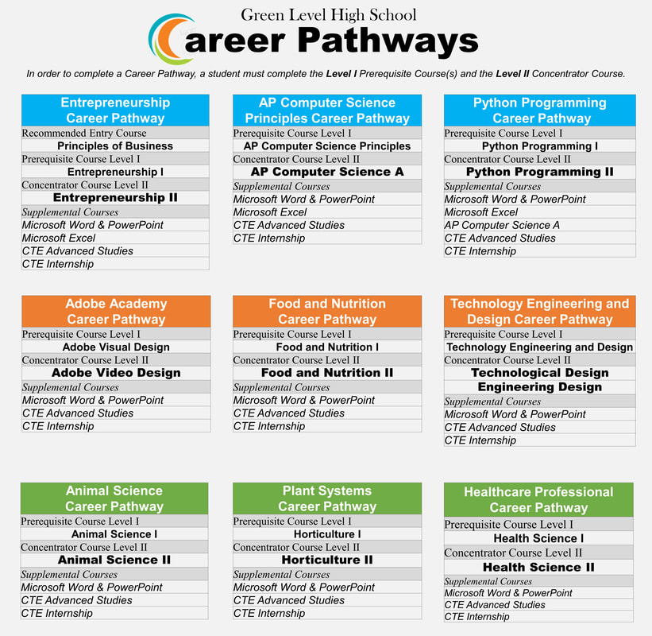

Career Pathways™ provide students the opportunity to discover their interests and their passions, and empowers them to choose the educational pathway that can lead to success in high school, college and career. Here at Green Level high school we currently have nine CTE Career Pathways for students to explore.
